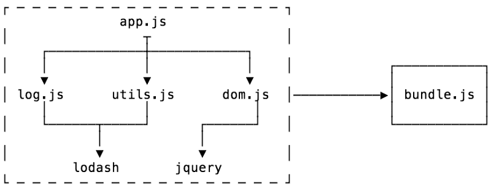

Module Bundlers
Un module bundlers es una herramienta que coge distintos ficheros (png, js, css) y sus dependencias y las agrupa en un solo archivo, generalmente para usar en el navegador. Por lo general, comienza con un archivo de entrada, y desde allí agrupa todo el código necesario para ese archivo de entrada. Existen distintas herramientas de este tipo:
- Parcel
- Webpack
- Browserify
- Rollup
Hay dos etapas principales de un paquete:
- Resolución de la dependencia
- Empaquetado
Comenzando desde un punto de entrada tal como se ve en la imagen es app.js, el objetivo de la resolución de dependencias es buscar todas las dependencias de su código (otras partes de código que necesita para funcionar) y construir un gráfico (llamado gráfico de dependencia).
Una vez hecho esto, puede empaquetar o convertir su gráfico de dependencia en un solo archivo que la aplicación pueda usar.
